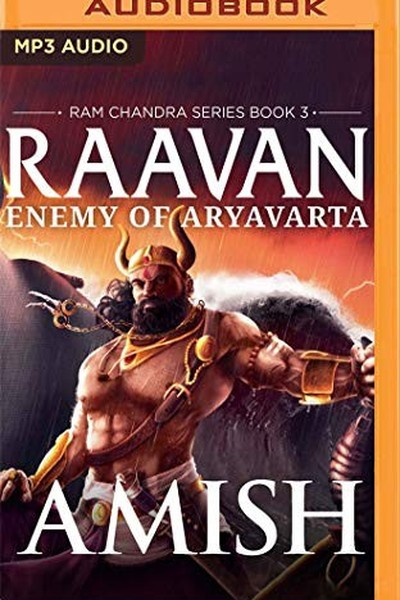

Library › Power & Strategy
Raavan: Enemy of Aryavarta — Summary & Key Lessons

Every villain is the hero of their own story.
📖 OPEN THE FULL INTERACTIVE BREAKDOWN →🌐 Read it in Hindi, Hinglish, Gujarati, Tamil & 22 more languages — free, with audio.
💡 The Big Idea
Amish's most controversial book tells the Ramayana from the villain's side: Raavan — brilliant, driven, tragic — becomes the hero of his own story. The book's power is in its reversal: every act of evil is, from inside, an act of justice. Amish's lessons: nobody is the villain of their own life; ambition without love curdles into tyranny; and the most dangerous man is the one who has been wronged and never processed it. Understanding your enemy is not sympathy — it is the highest form of strategy.
🧠 The 6 Key Lessons
Lesson 1: Everyone Is the Hero of Their Own Story
Part 1: The Villain's View
Amish opens the book from inside Raavan's head — and suddenly every 'evil' act has a reason, a grievance, a logic. The lesson is strategic and humbling: nobody acts without justification from their own seat. The person who opposes you is not a cartoon — they have a story in which they are right. Understanding that story is not forgiveness; it is intelligence. The negotiator, leader or friend who can see the other side's self-justification can predict their moves, find their pressure points and maybe find common ground. The person who only sees 'evil' is blind in the most expensive way.
📖 Example: Raavan's attacks on Meluha and Ayodhya are, from his perspective, righteous — revenge for wrongs done to his people and his pride. The same war is 'villainy' and 'justice' depending on the seat. Read the full example →
⚡ Do this: Write your current opponent's justification for their position — as they would tell it. Use it to predict their next move.
Lesson 2: Ambition Without Love Becomes Tyranny
Part 2: The Rise
Raavan rises from poverty to power through genius and will — but the engine that should have been love (for his mother, his sister, his people) gets hijacked by pride and rage. Amish's lesson: ambition is a neutral engine; the fuel determines the destination. Ambition powered by love builds empires that last; ambition powered by ego builds towers that topple. The successful-but-empty life is ambition running on the wrong fuel. Check your fuel regularly: are you building because you love something or because you must prove something?
📖 Example: Every achievement Raavan piles up is, at bottom, an attempt to prove himself to a world that once dismissed him — the proving never ends, and the emptiness grows with the empire. Read the full example →
⚡ Do this: Ask: 'What is my ambition really for — love or proof?' If it's proof, name what you're trying to prove and to whom. Consider a bigger fuel.
Lesson 3: The Wronged Man Is the Most Dangerous Man
Part 3: The Wound
Amish's central psychological claim: Raavan's cruelty is a wound weaponized. Every injustice he suffered was stored, and the storage became strategy. The lesson: unprocessed grievance is a loaded weapon — in yourself and in others. The person nursing a wound makes decisions the world calls evil and they call necessary. The defence: process your wounds before they process you — name the injustice, grieve it, and refuse to let it write your life. And when dealing with a 'difficult' person, ask what wound is driving them; the wound is the real opponent.
📖 Example: Raavan's most brutal decisions trace directly to specific wounds — the humiliation, the loss, the rejection. His empire is built on revenge, and revenge is the architecture of his doom. Read the full example →
⚡ Do this: List one old wound you still carry. Write what it has cost you in decisions. Choose one way to process it — writing, therapy, conversation — this month.
Lesson 4: Pride Is the Blind Spot of Genius
Part 4: The Fall
Raavan is arguably the smartest man in the trilogy — and his intelligence is exactly what destroys him, because it feeds his pride. He out-thinks everyone and therefore stops listening to anyone. Amish's lesson: brilliance is a blind spot factory — the smarter you are, the easier it is to mistake your model of the world for the world itself. The defence: surround yourself with people who can tell you you're wrong, and build the habit of actually hearing them. The genius who can be corrected is unstoppable; the genius who can't is a tragedy in slow motion.
📖 Example: Every advisor who warns Raavan is dismissed because he can see further than they can — and his fatal errors are precisely the ones he was warned about by people he considered beneath him. Read the full example →
⚡ Do this: Identify one person you routinely dismiss. Ask their opinion on a real decision — and genuinely consider it. The correction you accept is the blind spot you close.
Lesson 5: The Cost of 'Winning' Without Honour
Part 5: The Price
Raavan wins battle after battle — and loses everything that made winning meaningful. Amish's accounting: what did his victories cost? Family, peace, a clear conscience, and finally his life. The lesson: winning is not the same as succeeding. The deal closed by exploitation, the promotion won by betrayal, the argument won by humiliation — each is a victory that bills you later. The true scorecard includes the costs the scoreboard ignores. Win in a way you can keep.
📖 Example: Raavan's final tally: a kingdom, yes — and an estranged family, a paranoid court, a reputation that became a curse. The victories were real; so were the costs. Most people nod at this principle and change nothing. The gap between agreeing and acting is where… Read the full example →
⚡ Do this: Review your last three 'wins'. List what each cost that the scoreboard didn't show. Adjust your definition of winning.
Lesson 6: Understanding Your Enemy Is the Highest Strategy
Part 6: The Mirror
The book's final message: by understanding Raavan — his wounds, his genius, his self-justification — you understand every opponent you'll ever face. Amish's strategy lesson: the person who studies their enemy deeply fights half the battle before it begins. Raavan's tragedy is that he never truly understood Ram — he saw only his own story. The mirror lesson: the enemy you refuse to understand will defeat you in ways you refused to see coming. Study the other side like you'd study yourself — with curiosity, not contempt.
📖 Example: Raavan underestimates Ram because he reads him through his own lens — and the underestimation is fatal. The understanding he withheld from his enemy is the understanding that would have saved him. Read the full example →
⚡ Do this: Study one opponent or competitor deeply this week — their history, their constraints, their self-story. Write one page. Predict their next move.
✅ 5-Step Action Plan
- Write your opponent's self-justification and predict their next move.
- Check your ambition's fuel: love or proof?
- Process one old wound this month — before it processes you.
- Ask one dismissed person's opinion on a real decision.
- Audit your last three wins for hidden costs.
⚠️ When This Doesn't Work
Amish's 'the enemy is a man of genius destroyed by his own greatness' is the most empathetic villain-redemption ever — and Ravana is the warning at the center of his own book: the scholar, the devotee, the master of every art — and the arrogance that made him take what was not his and refuse to return it. Amish's Ravana is sympathetic; the caveat is that sympathy is not the same as justification. The book's brilliance — making you feel the villain's logic — is also its danger: every abuser, every empire, every fraud has an internal logic as coherent as Ravana's. Understand the enemy, yes — the understanding is the weapon. It is not the pardon.
💀 The Graveyard Proves It
👑 Ravana — The Scholar-King Whose Arrogance Cost Him an Empire. Burn: Kingdom, family and life — lost to one act of arrogance. Read the full case study →
💬 Best Quotes from Raavan: Enemy of Aryavarta
- “Nobody is the villain of their own story — understand that, and you understand everyone.”
- “Ambition without love becomes tyranny.”
- “The wronged man is the most dangerous man — process your wounds before they process you.”
Interactive version: mark lessons as read, listen in your language, share quote cards.